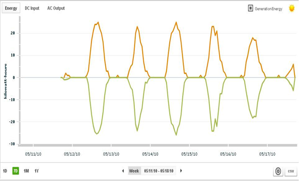

Metering & Monitoring System Frequently Asked Questions (FAQs)
Hardware General
-
What does the monitoring panel do?
It provides energy usage information collected at the solar system to the top level monitoring system provider. This data is usually used to provide verification to a government agency for rebate purposes.
-
What monitoring providers do DST’s monitoring panels work with?
Fat Spaniel and all systems that have a generic protocol and accept generic hardware.
-
Why did I get sent the monitor that I have rather than what I need?
If this occurs, please contact DST immediately and speak with one of our expert solar design engineers or technicians.
-
Is there setup required for the gateway?
Yes. Each Gateway requires an IP address that needs to be recorded/setup in the providers monitoring system.
-
How do I order a generic monitoring panel?
Go to DST’s web site and click on Meters and Monitoring. Or you can call (800) 251-0773
-
Can I also order the CTs from DST?
Absolutely. Unlike other providers, DST is happy to assist its customers in selecting and providing CTs. We also offer options for the most accurate CTs on the market.
-
What is the difference between a power meter that takes mV CTs and a power meter that takes 0-5A CTs and do I need any additional hardware?
The power meters are setup to accept inputs from specific model CTs. Typical CTs used on the output of inverters have outputs of either 0-333 mV or 0-5 amps. Please note that the higher amp CTs with 0-5 amp outputs can be very dangerous. Shorting blocks should be installed for safety.
-
How do I know if my metering panel and power meter are working?
If you have an Elkor WattsOn meter, or similar with no display, you will need to view it through your monitoring service. If you have a Veris meter, or similar style with a display, you will be able to see the meter parameters on a small display by scrolling through them. You will still need to verify the rest of the system through your monitoring service.
-
Can I order Standard and/or Smart combiners from DST?
Yes, please click on the following link- (Combiner Page)
Networking
-
What type of network connection needs to be provided for the gateway?
DST’s Gateways accept Ethernet RJ45 connectors.
-
What ports need to be opened on the site's firewall and how?
Ports 4001 and 6051 need to be opened outbound TCP for Data Loggers, ports SSL TCP port 443 and NTP port = UDP Port 123 must be opened for Weather Hawk installations.
-
How often does a logger communicate on the network and how much data does it send?
A Data Logger attempts to communicate every minute 24/7- 365. The amount of data it sends per records is dependent on the number of devices being monitored by the logger.
-
If a logger goes offline how long can it store data?
This is significantly impacted by the type of logger hardware and number of individual and types of devices being monitored. However, note that most loggers are designed that if their memory capacity is met, they will parse interim records to maintain as continuous a data stream as possible for the offline period i.e. if a logger could store 1 minute records for 1 week of offline time, it would store 2 minute intervals for 2 weeks, 10 minutes for 10 weeks, etc.
Devices
-
What are the major distance limitations in daisy chaining devices?
Cat-5 300 ft. Serial Connections 50 ft. 24 V power to Adam modules 800 ft. RS 485 400 ft.
-
Which way do I install the current transducers?
The dot or the back of the arrow (depends on the CT) should face the source. For PV monitoring that would be the inverter or inverter AC combiner boxes. For building demand that would be the grid interconnect panel. 5 Amp CTs the white leg is the high side, the black leg is the low side, white corresponds to I11, 21, and 31, Black to I12, 22, and 32. Make sure that your current transducer for 'A phase' matches your voltage tap for 'A phase', or else you will have meter phasing issues. See hardware wiring diagrams, shipped with the box, for more details.
If you install them backwards your views will look like this (inverter direct is orange, meter with CT's is green):
 -
What happens if the device to logger connection gets severed?
Loggers traditionally time stamp a running real time record or cumulative meter read from the devices. If the logger to device connection gets severed, the monitoring device will still be recording these values, but they will not get time stamped by the logger. This will cause null gaps in the database and cause 'jumps' in cumulative records when pulled in reports or charted. See more details on this issue below.
-
What happens if I lose power to the AC/DC power transformer?
As almost all monitoring devices use the 24 V DC output lines of this transformer, all hardware capabilities will be affected: sending to monitoring software, time stamping by the logger, and device and sensor recording. If this occurs, there will be no interval or cumulative records of the downtime event.
-
What is the difference between Revenue Grade and non Revenue Grade?
Non Revenue grade data normally comes from the internal monitoring of inverter direct data. Its accuracy tolerance is plus or minus 5%. Revenue Grade comes from IEEE specified sensor and metering hardware, and tolerances for these devices range from plus or minus .5% to 2%.
Agency and Billing reports It is strongly recommended or required that to be eligible for an ongoing production rebate, renewable energy credit certification, or billing function that a revenue grade value is used in the monitoring software suite. Please review report FAQ's, Best Practices, and instructional pages for more details.
-
Should yardmasters be mounted horizontally or in the Plane of Array (POA)?
Our recommendation is that you should have two; one mounted level, and one at POA. If you are only going to have one, our recommendation is POA. With the POA sensor you receive a more accurate representation of the irradiant actually striking the panels at their tilt and azimuth, making for a much more accurate and effective performance ratio algorithm. However, when you have a level sensor you can compare to disparate sites equally with their input irradiant.
Views
-
What browsers are not supported by your software?
The only browser completely not supported is Internet Explorer 6 and below, as these browsers are no longer supported by Microsoft. Internet Explorer in general has more stringent security settings that can cause issues in views and reports. DST’s recommended browser is Mozilla Firefox.